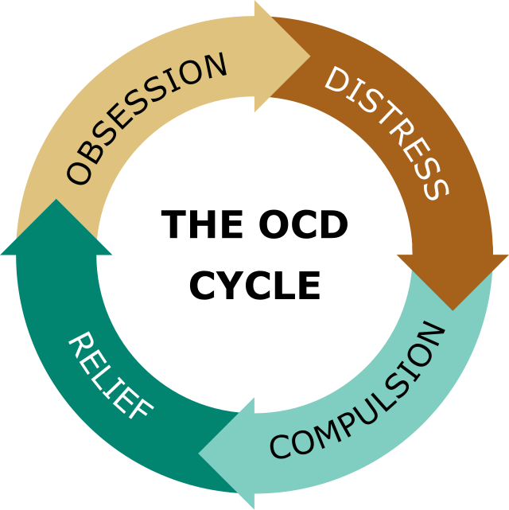

Home
Neurocognizance
Communication
Nurture
Self Care
Neurodivergent Examples
Autism
ADHD
Dislexia
Tourette Syndrome
Dyscalculia
Dyspraxia
OCD
Sensory Processing Disorder
Routines
Contact
OCD
OCD affects approximately 1.2% of U.S. adults in a given year, with a higher prevalence among females (1.8%) compared to males (0.5%).
https://iocdf.org/ocd-finding-help/other-resources/
The average age of onset for OCD is 19 years old, with symptoms often developing in late adolescence for men and early twenties for women.
https://www.treatmyocd.com/blog/online-resources-to-treat-ocd
About 50.6% of adults with OCD experience serious impairment, while 34.8% have moderate impairment and 14.6% have mild impairment.
https://beyondocd.org/
OCD is the fourth most common mental disorder globally, affecting around 3% of the world's population.
https://www.nhs.uk/mental-health/conditions/obsessive-compulsive-disorder-ocd/treatment/
The lifetime prevalence of OCD among U.S. adults is estimated at 2.3%, which means approximately 1 in 40 people will develop the disorder at some point in their lives.
https://iocdf.org/ocd-finding-help/
